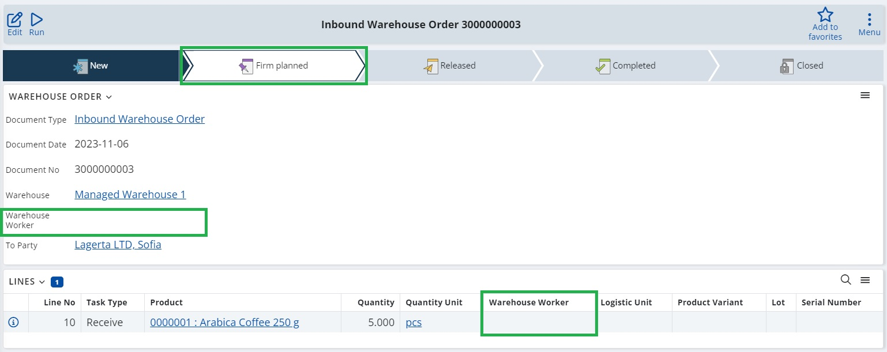
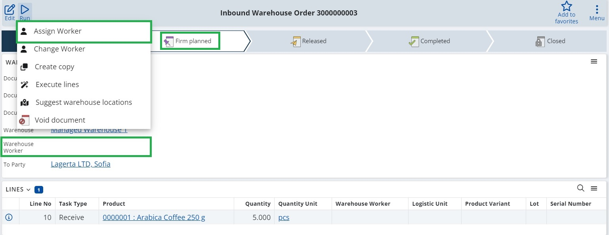
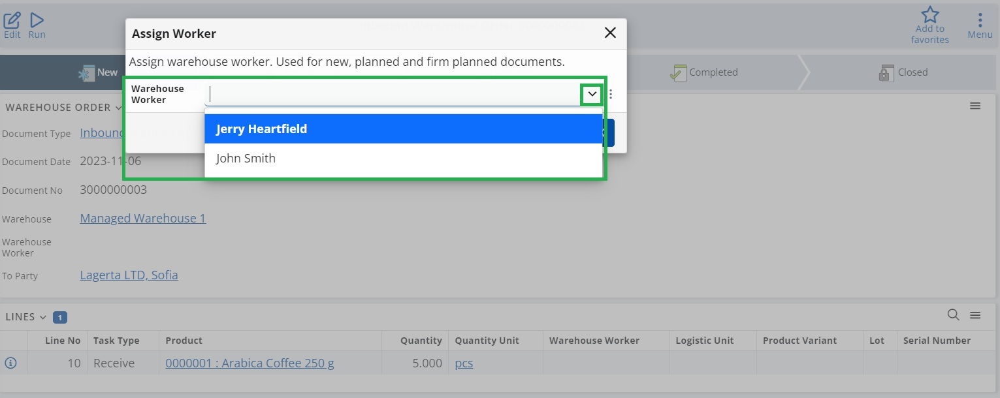
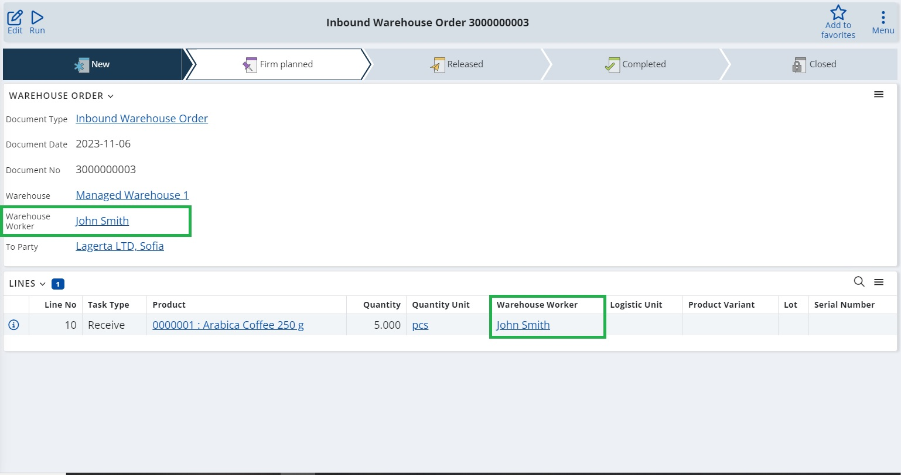

Assign worker
The "Assign worker" UI function allows setting a worker responsible for a task in a "Warehouse Order" document. WMS Worker interface.
Note
This function is accessible only for Warehouse Orders in a state lower than Released. If the current document is in a state Released, you can change the worker by using the Change Worker UI function.
How to use it:
Open the relevant warehouse order in a state New, Planned or Firm planned.

Click on the "RUN“ button and choose "Assign worker." This action triggers a dropdown list of Warehouse Workers. The displayed workers are filtered based on the warehouse selected in the document.

Select the preferred Warehouse Worker from the dropdown list and confirm your choice by clicking "OK." This initiates the function.

After refreshing the document, the Warehouse Worker field will show the selected worker.
